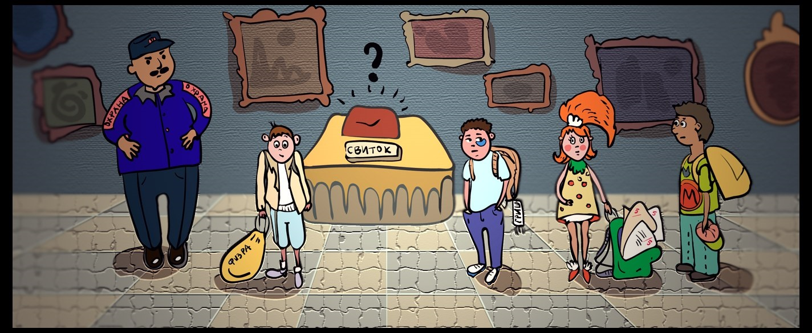

В последнее время музей посещали всего несколько ребят из младшей школы, расположенной неподалёку: Гриша, Миша, Эля и Вова - забрал свиток кто-то из них. Никто из ребят не признаётся, поэтому начнём расследование!
Всем известно, что Эля ходит в музей каждый день и в тот день была тоже, а Вова заходит в музей только после занятий по физкультуре, которые проходят по чётным дням недели, поэтому в музее его всегда видят с мешком для спортивной формы. Гриша и Миша враждуют друг с другом из-за Эли, поэтому в музей до сегодняшнего дня приходили только в разные дни, то есть Гриша никогда не посещал музей, когда там был Миша, а Миша никогда не посещал музей, когда там был Гриша.При этом каждый из них обязательно появляется в музее, когда там есть Эля. Пару дней назад Миша и Гриша подрались из-за неё, и последние два раза в музей с ней ходил победитель. Известно, что победитель вышел из драки с меньшим уроном для внешнего вида. То есть, если Миша победитель и Эля была в музее в день продажи, то Миша был в музее, если Гриша победитель и Эля была в музее в день продажи, то Гриша был в музее.
После опроса одноклассников и работников музея удалось собрать некоторую информацию об участниках этого происшествия. Вам нужно отвергнуть ложную и подтвердить правильную, так чтобы ответ однозначно указал на виновника:
- «Вова был вчера в музее (охранник говорит, что в день пропажи в музее он видел мальчика с мешком)».
- «Также одноклассники считают, что Эля не брала свиток, потому что она хорошая девочка».
- «Однако кое-кто утверждает, что Эля плохо учится, да и вообще она плохая девочка».
- «Если Эля была в музее в день пропажи и Гриша победил Мишу, то в пропаже свитка замешан Гриша или Эля».
- «Если же Эля была в музее в день пропажи и при этом Миша победил Гришу, то в пропаже свитка замешан Миша или Эля».
- «В схватке Гриша победил Мишу (об этом кто-то сообщил по секрету)».
У кого же этот ценный и древний экспонат?
История
Из музея исчез древний и очень ценный свиток. На следующий день состоялось расследование.В последнее время музей посещали всего несколько ребят из младшей школы, расположенной неподалёку: Гриша, Миша, Эля и Вова - забрал свиток кто-то из них. Никто из ребят не признаётся, поэтому начнём расследование!
Всем известно, что Эля ходит в музей каждый день и в тот день была тоже, а Вова заходит в музей только после занятий по физкультуре, которые проходят по чётным дням недели, поэтому в музее его всегда видят с мешком для спортивной формы. Гриша и Миша враждуют друг с другом из-за Эли, поэтому в музей до сегодняшнего дня приходили только в разные дни, то есть Гриша никогда не посещал музей, когда там был Миша, а Миша никогда не посещал музей, когда там был Гриша.При этом каждый из них обязательно появляется в музее, когда там есть Эля. Пару дней назад Миша и Гриша подрались из-за неё, и последние два раза в музей с ней ходил победитель. Известно, что победитель вышел из драки с меньшим уроном для внешнего вида. То есть, если Миша победитель и Эля была в музее в день продажи, то Миша был в музее, если Гриша победитель и Эля была в музее в день продажи, то Гриша был в музее.
После опроса одноклассников и работников музея удалось собрать некоторую информацию об участниках этого происшествия. Вам нужно отвергнуть ложную и подтвердить правильную, так чтобы ответ однозначно указал на виновника:
- «Вова был вчера в музее (охранник говорит, что в день пропажи в музее он видел мальчика с мешком)».
- «Также одноклассники считают, что Эля не брала свиток, потому что она хорошая девочка».
- «Однако кое-кто утверждает, что Эля плохо учится, да и вообще она плохая девочка».
- «Если Эля была в музее в день пропажи и Гриша победил Мишу, то в пропаже свитка замешан Гриша или Эля».
- «Если же Эля была в музее в день пропажи и при этом Миша победил Гришу, то в пропаже свитка замешан Миша или Эля».
- «В схватке Гриша победил Мишу (об этом кто-то сообщил по секрету)».
У кого же этот ценный и древний экспонат?
Гриша забрал свиток
Миша забрал свиток
Эля забрала свиток
Вова забрал свиток
Вова был в музее в день пропажи
Гриша был в музее в день пропажи
Миша был в музее в день пропажи
Эля была в музее в день пропажи
Эля учится плохо, да и вообще плохая девочка
Гриша победил Мишу
Логические выражения
Окно доказательств